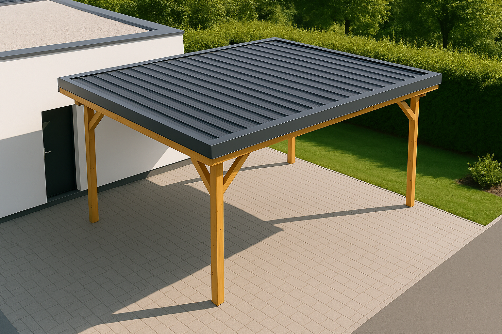
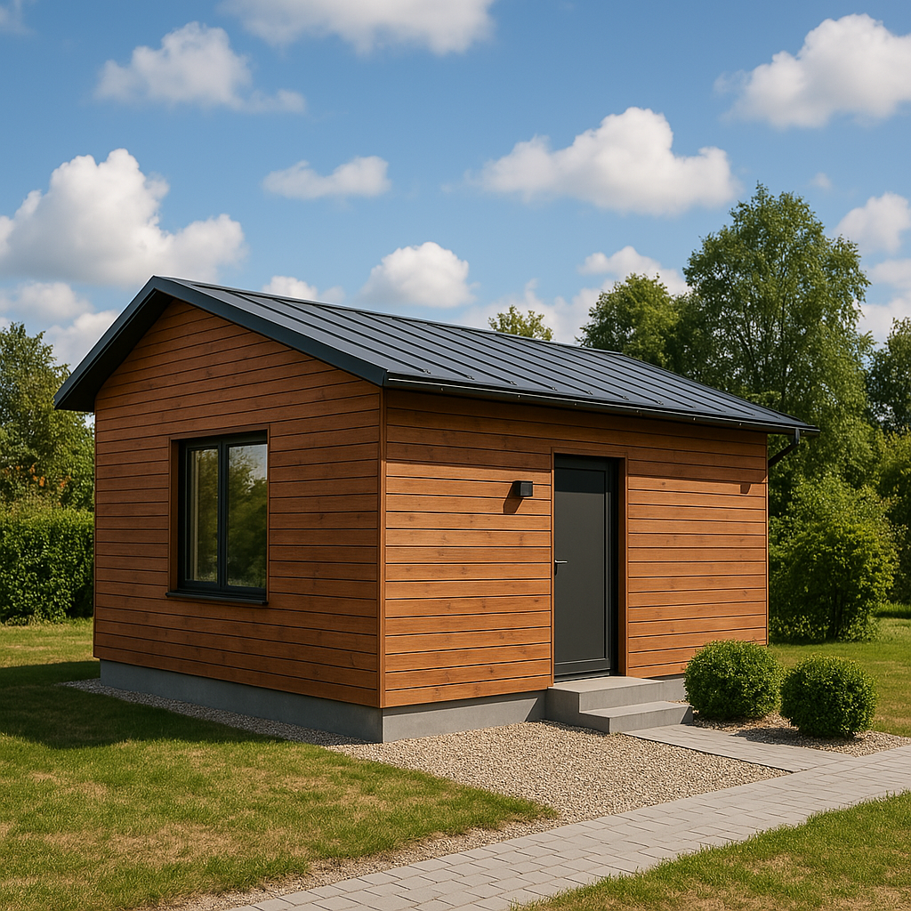
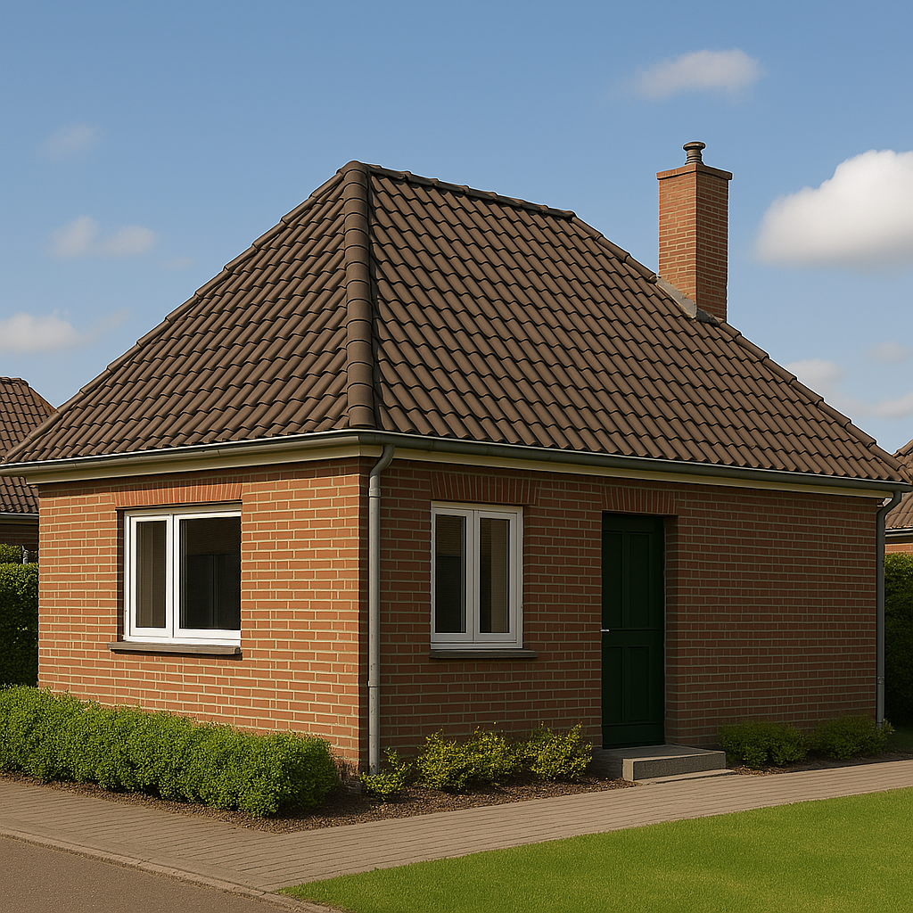

Blechdach richtig vermessen
Präzision ist alles! Eine exakte Vermessung entscheidet über Erfolg oder Misserfolg bei der Blechdach-Montage. Hier erfährst du, wie Profis messen und welche bewährten Tricks den Unterschied machen.
Präzision ist alles! Eine exakte Vermessung entscheidet über Erfolg oder Misserfolg bei der Blechdach-Montage. Hier erfährst du, wie Profis messen und welche bewährten Tricks den Unterschied machen.



Erkenne die Grundform: Satteldach, Walmdach oder Pultdach? Dies bestimmt die Mess-Strategie und die benötigten Berechnungen.
Wichtige Messmaße am Dach
Einfache Methode: Lege eine 1m-Wasserwaage an die Dachfläche. Miss am Ende der Wasserwaage den senkrechten Abstand zur Dachfläche. Bei 1m Wasserwaage und 20cm Höhenunterschied hast du 20° Dachneigung.
Mit der richtigen Sicherheitsausrüstung, professionellen Messwerkzeugen und bewährten Techniken wird die Dachvermessung zur Routine. Der 3-4-5m-Trick für rechte Winkel, systematisches Vorgehen und die Vermeidung typischer Fehler sind der Schlüssel zum Erfolg.
Mit den gemessenen Werten können Sie jetzt den genauen Materialbedarf ermitteln: